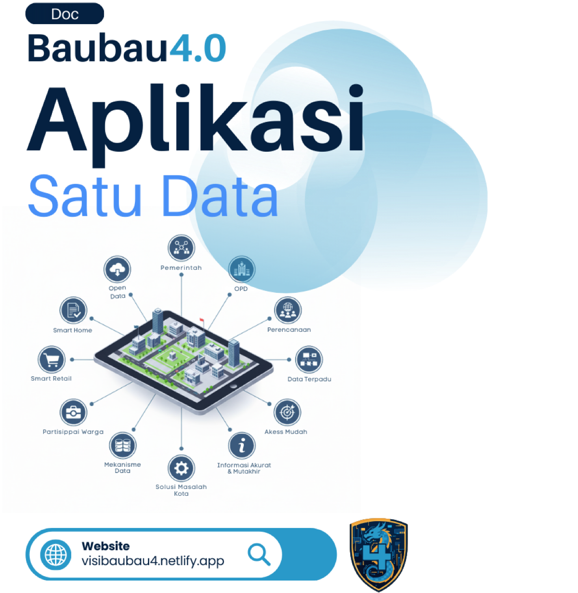

Pemerintah Kota Baubau berkomitmen untuk menyediakan layanan publik yang modern, efisien, dan mudah diakses. Melalui inisiatif Baubau 4.0, beberapa aplikasi kunci telah dikembangkan untuk melayani kebutuhan masyarakat dan mengoptimalkan tata kelola pemerintahan.
Super App yang mengintegrasikan berbagai data dan layanan publik dalam satu platform terpadu.
Aplikasi khusus untuk memudahkan masyarakat dalam membayar berbagai jenis retribusi daerah secara online.
Evolusi dari sistem retribusi sebelumnya, dengan fitur yang lebih lengkap dan arsitektur yang lebih andal.
Aplikasi Satu Data dirancang sebagai "Super App" yang menjadi pintu gerbang utama bagi masyarakat untuk mengakses berbagai informasi dan layanan dari Pemerintah Kota Baubau. Tujuannya adalah menyediakan data yang akurat, mutakhir, terpadu, dan mudah diakses oleh semua pihak.

Memberikan akses publik terhadap informasi yang relevan, seperti data statistik kependudukan, anggaran, dan proyek pembangunan.
Mewujudkan konsep masyarakat sebagai co-creator dengan menyediakan data yang dapat digunakan warga untuk berpartisipasi dalam pembangunan.
Mengintegrasikan layanan dari berbagai OPD ke dalam satu platform, sehingga masyarakat tidak perlu mengunduh banyak aplikasi.
Menyediakan data yang akurat bagi pemerintah untuk analisis dan pengambilan kebijakan yang lebih baik.
Aplikasi E-Retribusi adalah solusi terintegrasi untuk mengoptimalkan penerimaan daerah dan meningkatkan pelayanan pembayaran retribusi bagi masyarakat.
Login aman via NIK, dan halaman profil untuk mengelola data pribadi.
Menampilkan info saldo, akses cepat pembayaran, dan tunggakan.
Mendukung Virtual Account, QRIS, dan metode digital lainnya.
Melihat riwayat tagihan dan membayar beberapa tagihan sekaligus.
Fitur untuk mengirimkan masukan, kritik, dan menilai kepuasan layanan.
Dashboard real-time bagi pemerintah untuk memonitor penerimaan.
Sipanda 2.0 adalah proposal pengembangan dari sistem retribusi yang sudah ada (Sipanda 1.0). Evolusi ini diperlukan untuk mengatasi berbagai permasalahan strategis yang menghambat efektivitas dan adopsi sistem.
Pengalaman pengguna yang buruk, navigasi rumit, dan tidak adanya fitur vital seperti dashboard analitik.
Ketergantungan pada vendor (vendor lock-in) di mana akses superadmin dikuasai oleh pihak eksternal.
Arsitektur yang tidak dapat diskalakan, database terisolasi, dan keamanan data yang tidak terjamin.
Manfaat yang tidak jelas bagi pengguna dan proses yang lebih rumit daripada membayar langsung.
Sipanda 2.0 dirancang dengan arsitektur microservices yang modern, robust, dan skalabel untuk mendukung pertumbuhan jangka panjang, integrasi yang mulus, dan pengalaman pengguna yang jauh lebih baik.
Untuk memastikan semua aplikasi dapat saling terhubung dalam ekosistem Aplikasi Satu Data, setiap pengembangan aplikasi baru wajib mengikuti Standar Operasional Prosedur (SOP) dan panduan teknis yang telah ditetapkan.
Setiap proses pembuatan aplikasi harus melalui 6 tahap utama: Perencanaan, Perancangan, Pengembangan, Pengujian, Deployment, dan Pemeliharaan.
| Kategori | Persyaratan Utama |
|---|---|
| Arsitektur & Teknologi | Dianjurkan mengadopsi Microservices & Docker. Aplikasi wajib bersifat Stateless. |
| Standar API | Wajib RESTful, format JSON, dan dokumentasi menggunakan OpenAPI (Swagger). |
| Keamanan | Komunikasi wajib HTTPS (TLS 1.2+). Autentikasi menggunakan OAuth 2.0 & JWT. |
| Manajemen Data | Wajib mengambil data master dari API Satu Data dan menggunakan kode referensi standar. |
Panduan ini bertujuan untuk menciptakan ekosistem aplikasi yang terintegrasi, aman, dan mudah dikelola, sehingga memberikan nilai maksimal bagi masyarakat dan pemerintah.